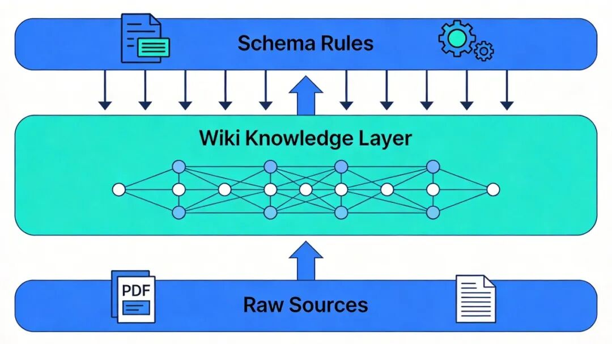
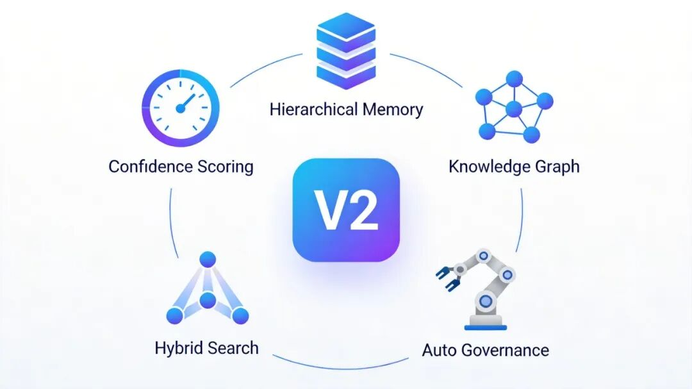
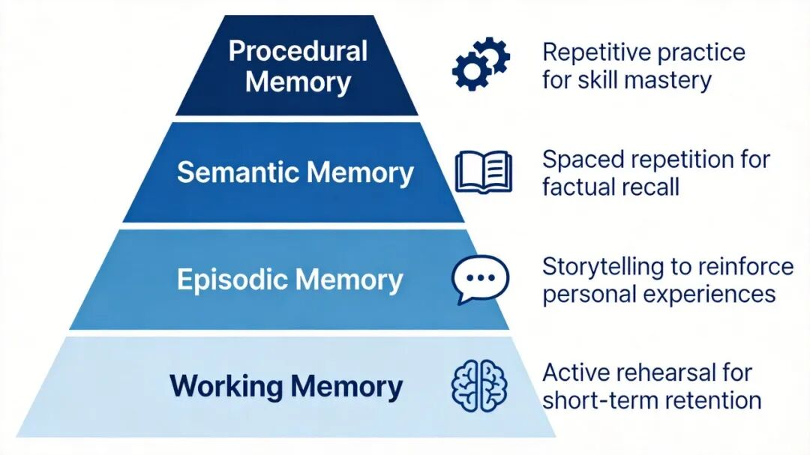

你用AI处理过的知识，为什么全都"留不下"？
先说个场景，你肯定不陌生。
拿到一篇几十页的行业报告，丢给 ChatGPT，让它帮你提炼要点。聊了二十分钟，观点梳理得清清楚楚，甚至还有自己的分析。你满意地关掉对话框。
第二天，想引用其中一个数据点。打开新的对话窗口，重新上传报告，重新提问——一切从头来过。
上周聊过的那个精彩洞察？没了。上个月让 AI 帮你对比过的那三篇论文？也得重新来。
这不是 AI 变笨了，而是我们一直在用一种"阅后即焚"的方式跟 AI 打交道。
你让它搜，它就搜；你让它总结，它就总结。但总结完之后呢？什么都没留下。下次再来，它又是一张白纸。
这个问题困扰我很久了。直到上个月，Karpathy 发了一条长推，把这件事讲透了。
一、问题的根源：你让AI当搜索引擎用了
目前绝大多数人用AI处理文档的方式，本质上都是RAG——不管你知不知道这个词。
RAG（Retrieval-Augmented Generation）翻译成人话就是：
你扔一堆文件进去，AI 每次提问时从文件里翻找相关片段，然后拼个答案给你。
ChatGPT 的文件上传是 RAG，Google 的 NotebookLM 是 RAG，企业里搭的大部分知识库方案也是 RAG。
能用吗？能用。但有个要命的问题——知识没积累。
打个比方。你去图书馆借了五本书，每本都做了详细的读书笔记。但你把笔记全写在便利贴上，贴完就扔了。下次想查某个观点，你得重新翻那五本书。
这就是 RAG 的现状。AI 每次都在"重新发现"你已经让它发现过的东西。
更糟的是，如果你在三月份让它读了一篇论文说方法 A 有效，六月份又来一篇说方法 A 有严重问题——它不会主动告诉你这两篇矛盾了。因为在上一个会话里做的分析，到下一个会话已经不存在了。
说白了，RAG 是"无状态"的。你每次消费的都是原始文档，知识本身从未被加工、被提炼、被沉淀。
二、Karpathy 的思路：别搜了，让AI帮你"编"一套百科全书
Andrej Karpathy——OpenAI 联合创始成员、前特斯拉 AI 总监——给了一个完全不同的思路。
他说的其实很简单：与其让 AI 每次临时翻书找答案，不如让它像一位全职的百科全书编辑，持续地阅读你喂给它的资料，提炼、整合、交叉引用，维护一部专属于你的知识库。
这个方案叫 LLM Wiki。消息出来 48 小时，GitHub 星标破了 5000。
三层结构
整个系统分成三层，说白了就是三个文件夹：
底层：原始资料库——你收集的论文、报告、文章、笔记，原封不动放在那里。AI 只读不改，这些文件是你的"原件"。
中层：Wiki 知识库——AI 帮你生成的结构化笔记。摘要、概念解释、人物档案、对比分析、时间线，全部用 Markdown 写好，互相链接。这一层 AI 全权负责写和维护，你只管看。
顶层：规则配置——一份"操作手册"，告诉 AI 你的 Wiki 该怎么组织、用什么格式、更新时该遵守什么流程。可以把它理解成你和 AI 之间的一份"劳动合同"。

日常就三件事
搭好这三层之后，你日常只需要做三个动作：
喂资料：扔一篇新论文给 AI，它会读完，跟你讨论要点，然后自动在 Wiki 里新建摘要页、更新相关概念页、补充交叉引用。一篇资料进来，可能触发十几个页面的更新。 提问：直接对着 Wiki 问。AI 不用再去翻原始文档了，因为关键信息已经被编译好了。更重要的是，好的答案本身也会被存进 Wiki。你让它做的一次对比分析、你发现的一个关联，全都会沉淀下来。这就是"复利效应"——你的每次提问都在让知识库变得更丰富。 体检：定期让 AI 给 Wiki 做一次"健康检查"：有没有自相矛盾的页面？有没有过时的结论？有没有创建了但没人链接的"孤岛"页面？有没有重要概念还没建专页？
听起来不就是 Obsidian + AI 吗？
形式上有点像，但本质区别在于**“谁来维护”**。你自己用 Obsidian 建知识库，维护负担会随着页面数量指数增长——更新链接、保持摘要最新、标注矛盾——这些都是让人崩溃的苦力活。
Karpathy 方案的核心是：这些活全部交给 AI。你只管选材料、问问题、做判断。
Karpathy 原话的意思是：人类放弃维护 Wiki，从来不是因为懒得思考，而是因为"记账"太累了。LLM 第一次让这些维护成本接近于零。
三、V2 来了：不只是"记住更多"，而是学会"遗忘"
V1 火了之后，大量开发者开始实战。很快，一个真实的问题浮出水面——知识库越大，噪音越多。
开发者 Rohit Ghumare 跑了一段时间 V1 之后，发现了一个挺尴尬的事：
当 Wiki 超过 200 页，全靠一个索引文件导航就开始力不从心了。更头疼的是，所有知识都被等权对待——三个月前的一条临时笔记和一篇核心论文的摘要在系统眼里"地位"一样。
他推出的 LLM Wiki V2，就是来解决这些"规模化之后的问题"。

升级一：每条知识都有了"保质期"
V2 给每条知识打了一个"置信度分数"，根据三个因素动态调整：
这信息从哪儿来的？同行评审论文 > 行业报告 > 博客文章； 有多少独立来源佐证了这个结论？证据越多，分数越高； 这信息多久了？越新的信息初始分数越高，但经典理论衰减极慢。
说白了，就是让知识会"自然过期"。一条三个月前录入的临时 bug 记录，如果没人再提起它，就会慢慢淡出。而一条被十篇论文反复验证的核心结论，权重会越来越高。
升级二：模仿人脑的四层记忆
这个设计我觉得特别巧妙。V2 把知识分成了四层，完全对标人类大脑的记忆机制：

层级越高，知识越精炼，存得越久。这样就不会出现"鸡毛蒜皮和核心知识混在一起"的情况了。
升级三：知识之间有了"关系标签"
V1 时代，Wiki 页面之间只是简单的超链接——你知道 A 页面连着 B 页面，但不知道它们之间是"支持"还是"反驳"还是"补充"。
V2 引入了带类型的关系。系统能记录"A 导致了 B"、“C 与 D 存在方法论冲突”、"E 是 F 的改进版本"这种语义关系。通过关系链路去探索，AI 能发现关键词搜索根本碰不到的隐藏关联。
举个例子：你的 Wiki 里有一篇关于"Transformer架构"的页面和一篇关于"注意力机制计算瓶颈"的页面。V1 里它们可能只是各自独立存在。但 V2 的图谱推理会自动在 Transformer 那页加上一条标注：“其核心组件在高维场景下可能存在性能瓶颈”。这种"跨越页面的智能推理"，是纯链接做不到的。
升级四：三种搜索一起上
Wiki 大了之后怎么找东西？V2 把三套搜索方案揉在一起：
BM25 关键词搜索——找专业术语、专有名词，精确匹配； 向量语义搜索——理解你问题的意思，匹配语义相近的内容； 图谱遍历——沿着关系链路，发现间接但重要的关联。
三路结果综合排序。实测下来，比任何单一搜索方式都靠谱。
升级五：AI 自己管理知识库
这个可能是最"省心"的改进。
自动遗忘：长期没人提、没被引用的知识条目会慢慢降权。但不同类型衰减速度不一样——架构决策衰减很慢（影响深远），临时 bug 记录衰减很快（很快就修好了或被替代了）。 自动维护：设好规则之后，系统会自动从指定信息源抓取新内容、自动压缩过长的对话记录、定时清理冗余页面。那些没人愿意干的活，AI 全包了。 智能调解：当新信息和旧知识打起来的时候，AI 不再只是冷冰冰地标注"此处存在冲突"，而是主动分析两边的权威度和时效性，给你一个倾向性建议：应该更新旧结论？还是两边都保留让读者自己判断？
四、实践者都在怎么用？
理念再好，得有人落地才行。好消息是，开源社区跑得很快。
LLM Wiki 发布不到一个月，已经有不少值得一试的实现方案：
OpenKB——能处理长文档和图片，适合做研究型知识库； Sage-Wiki——Go 语言写的，一个二进制文件就能跑，提供搜索、问答和 MCP 服务器； Obsidian 插件版——直接在 Obsidian 里用，不用换工具； Axiom Wiki——命令行爱好者的选择。
国内这边，网易有道云笔记也紧跟着推出了面向普通用户的 LLM-Wiki 技能套件，主打零基础上手。不用懂什么 Markdown、不用搭环境，跟着指引点几下就能用。
一个有意思的现象是，很多实践者不约而同地提到了同一个感受：“查询输出归档回 Wiki 的那一刻，知识库才真正开始复利增长。” 也就是说，不只是摄入的资料在丰富知识库，你问过的每一个问题、做过的每一次分析，都在让下一次提问的答案更好。
五、说点更本质的东西
跳出技术细节，这件事背后其实藏着一个更有意思的问题。
我们总以为"记住更多"就是更聪明。但人脑不是这么工作的。
人脑的聪明之处，恰恰在于它知道该忘记什么。你不会记住上周三午饭的每一道菜，但你会记住那个改变了你认知的一次对话。大脑通过遗忘来降噪，通过强化来固化，通过关联来创造新的理解。
V2 的置信度评分和分层记忆，本质上就是在用工程手段复刻这个过程。一个什么都往里塞的知识库，和一个什么都记不住的大脑一样，没什么用。
Karpathy 在原文里还提到了一个细节我觉得很值得玩味。他说这个想法的精神源头，是 1945 年万尼瓦尔·布什的一篇论文
在那篇文章里，布什构想了 Memex，一个能自动关联所有知识条目的私人知识机器。布什想了这个东西 80 年，一直没实现。
不是技术做不到，而是没人愿意当那个"维护员"。
现在 AI 愿意了。它不会烦，不会忘，不会因为维护了 200 个页面的交叉引用就辞职。这可能是 LLM 在"生产力工具"这个赛道上，最朴素但最真实的贡献——不是帮你写代码、写邮件，而是帮你做那些你明知道很重要但就是懒得做、做了也坚持不下去的事。
最后说一句可能有点鸡汤的话：真正的智慧，从来不是知道得多，而是知道什么值得记住。
只不过现在，你终于不用一个人扛了。